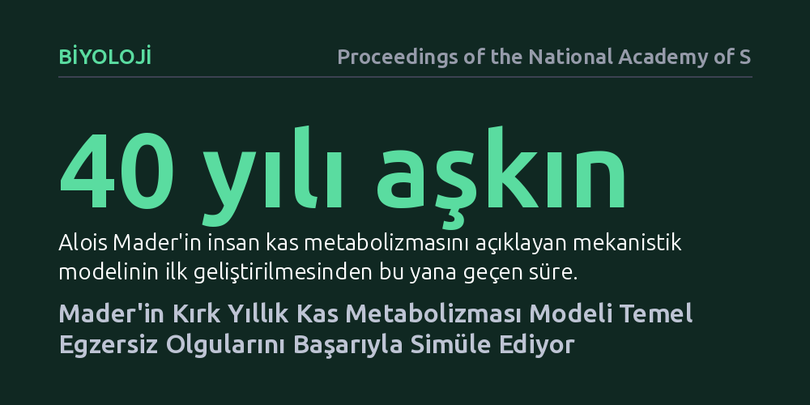

BIYOLOJI · Proceedings of the National Academy of Sciences · 2026-10-11
Araştırmacılar, kırk yılı aşkın süredir kapalı kalan Alois Mader kas enerjisi metabolizması modelini MetaboliSim adıyla açık kaynaklı bir simülasyona dönüştürdü. Simülasyon, insan kasının farklı egzersiz yoğunluklarında sergilediği temel metabolik tepkileri başarıyla canlandırdığını gösterdi.
Kas fizyolojisinde uzun süredir bilinen ancak kapalı kalan temel bir biyokimyasal model ilk kez açık kaynaklı bir yazılımla doğrulanıp tüm araştırmacıların kullanımına sunuldu.

İnsan kası yoğun bir egzersize başladığında enerji üretimi saniyeler içinde büyük bir değişime uğrar. Hücreler içindeki glikoliz, oksijenli solunum ve fosfokreatin döngüsü birbirini tamamlayarak kasın kasılmasını sürdürür. Bilim insanı Alois Mader, kırk yılı aşkın bir süre önce bu süreçlerin nasıl işlediğini açıklayan ayrıntılı bir matematiksel model geliştirdi. Ancak bu model uzun yıllar boyunca araştırmacıların çoğunun doğrudan erişip kullanamayacağı kapalı bir yapıda kaldı.
Egzersiz fizyolojisinde temel bir teorinin yaygın olarak test edilememesi, kasın enerji üretim mekanizmalarını araştıran bağımsız çalışmaları kısıtladı. Laboratuvar ortamında kas biyopsisi yapmak ya da sürekli kan örnekleri toplamak hem zorlu hem de maliyetlidir. Güvenilir ve serbestçe erişilebilen mekanistik bir hesaplama modeli, biyokimyasal süreçleri doğrudan bilgisayar başında anlamlandırmanın en pratik yolunu sunar.
Araştırmacılar bu engeli aşmak amacıyla Mader'in teorik denklemlerini modern hesaplama ortamına taşıdı. MetaboliSim adını verdikleri açık kaynaklı bir uygulama geliştirerek Mader modelinin matematiksel mimarisini herkesin inceleyebileceği bir yazılıma dönüştürdüler. Böylece onlarca yıllık teorik formüller, araştırmacıların kendi verileriyle çalıştırabileceği etkileşimli bir simülasyon aracı haline geldi.
Çalışmanın yöntemi, kas hücresi içindeki biyokimyasal reaksiyon hızlarını, oksijen kullanımını ve metabolitlerin zamana bağlı değişimlerini simüle etmeye dayanıyor. Araştırmacılar, bu simülasyon çıktılarının egzersiz fizyolojisinin bilinen dinamikleriyle ne ölçüde örtüştüğünü bilgisayar ortamında kapsamlı biçimde denetledi.
Elde edilen sonuçlar, Mader modelinin insan kasında egzersiz sırasında gözlenen kilit metabolik davranışları başarıyla ürettiğini gösterdi. Kasın farklı güç çıktılarına ve çalışma şiddetlerine verdiği biyokimyasal tepkiler model tarafından tutarlı biçimde hesaplandı.
Bu bulgular, modelin yalnızca teorik bir kurgudan ibaret olmadığını, egzersizin karmaşık metabolik olaylarını açıklamakta güvenilir bir hesaplama zemini sunduğunu ortaya koydu. Bilgisayar simülasyonları, hücresel enerji dengesinin egzersiz şiddeti arttıkça nasıl değiştiğini mekanistik kurallarla yeniden üretmeyi başardı.
Bu çalışma, kas metabolizması araştırmalarında uzun süredir eksikliği hissedilen açık ve tekrarlanabilir bir simülasyon altyapısı sağlıyor. Araştırmacılar ve antrenman bilimcileri artık enerji sistemlerinin dinamiklerini incelemek için pahalı veya invaziv laboratuvar işlemlerine başvurmadan önce bilgisayar üzerinde öngörüler geliştirebilir.
Bununla birlikte bilgisayar simülasyonlarının biyolojik gerçeğin basitleştirilmiş birer modeli olduğunu unutmamak gerekir. Yazılım genel fizyolojik kuralları başarıyla yansıtsa da her sporcunun kendine has biyolojik farklılıklarını bütünüyle kapsamayabilir; bu nedenle model çıktılarının laboratuvar ölçümleriyle birlikte değerlendirilmesi önemini korur.